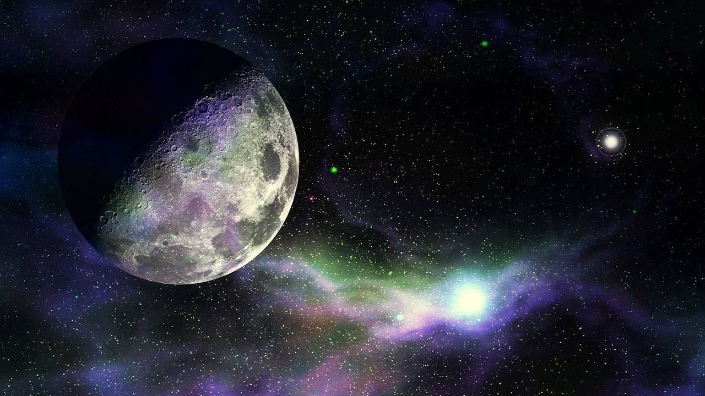

When was the last time you felt like waking up on another planet?
Have you ever wondered about the possibility of life existing anywhere other than our home planet? Well, doesn't that thought create excitement! If you are curious about it, we may have some discoveries to quench your thirst for curiosity. Thanks to the continuous evolution of humankind and advancements in technology, we can raise our hopes of finding life on another planet beyond Earth. Our technologies are evolving day by day, to the point where we can now seek and identify the chances of life on planets beyond our galaxy. Thankfully, we have found such planets that can sustain life, and humanity is on a long journey to confirm traces of life on these planets. We have named such planets as exoplanets. In our quest beyond our solar system, astronomers have discovered a multitude of exoplanets which may have the potential to sustain life. 14 Herculis b, 17 Scorii b, 42 Draconis b, Teegarden's Star b, 75 Ceti b, Gaia 1 b, TOI - 700 d are a few of them. Who knows, the next Earth could be one of them.

Visual Presentation of exoplanets:EXOPLANETS
Teegarden's star B
"Among these discovered exoplanets, Teegarden's Star b has more potential to support life. Teegarden's Star b orbits its star, Teegarden's Star, which is an M-type red dwarf located 12.5 light-years from our solar system.
Teegarden's Star b was discovered in June 2019 by Mathias Zechmeister. The planet is about 1.05 times larger than Earth and has a 60% chance of having liquid water, but only a 3% chance of having an atmosphere. It orbits every 4.91 days and rotates once per orbit, so that one side is always bathed in daylight."
Geography And Habitat
Have you ever wondered about the habitat on this planet?
If you were to visit this planet in the future, what would it be like to live there? In such a case, which one would you prefer - Earth or Teegarden?
Is Teegarden the next Earth?
The terrestrial atmosphere of the planet is assumed to have 60% water bodies, with the remaining portion comprising rocky plateaus. The dense, cloudy atmosphere prevents most of the star's brightness, resulting in dark, non-green vegetation. The thick cloud cover over the bright side of the planet helps balance the temperature on both sides. The sky appears to be a light orange color, resembling a typical sunset. The color of the oceans would also be similar. Due to the short orbital period, the planet is likely to experience extreme weather conditions alternately. The consistent condensation of water molecules enhances the sustainability of algae and microorganisms on the rocky plateaus. The atmospheric temperature of the planet is about 28 deg.C, similar to Earth, enhancing the chance for evolution similar to that of our home planet.

Organisms
The planet has a diversity of micro-life, such as prokaryotes, eukaryotes, protozoans, etc. The rocky plateaus and meadows of the planet are rich in minerals, so the chance of enormous vegetation is high in the future. The rocky crust may pave the way for the evolution of inhabitants with strong muscles and hardened bones. As 60% of the surface is covered with water, the inhabitants near the water are most likely to be amphibians. Most of the inhabitants depend on resources from water. Based on what we've said until now, are you assuming these lifeforms will be like us? Then you're wrong.
In the future, there will be a civilization of developed intelligent creatures, much like humankind.
Even though they maybe one-eyed, it gives them powerful vision, enough to survive the long nights. The most interesting fact is that if we ever visit their planet, we cannot communicate with them directly. The reason is that the frequency range of their sound waves is in the ultrasonic region. Are you thinking of being friends with them? Well, no. The scarcity of resources makes them more ferocious and hostile. If we plan to go there and start a civilization, we would need advanced technologies to compete with them, as we are nothing compared to their diligence and physical strength. Even though they have no technological advantages, they are far ahead of us in terms of physical and intellectual skills. The technology of ultrasonic sound detection and transmittance will help us understand their communication, but it won't be easy, as we are intruders to them.
Conclusion
"Until now, we have only touched the tip of the iceberg. Are we alone in this universe? Could there be unknown neighbors for us beyond Earth? There is much more that we don't know than we do. Secrets remain hidden, and mysteries are still unraveling."